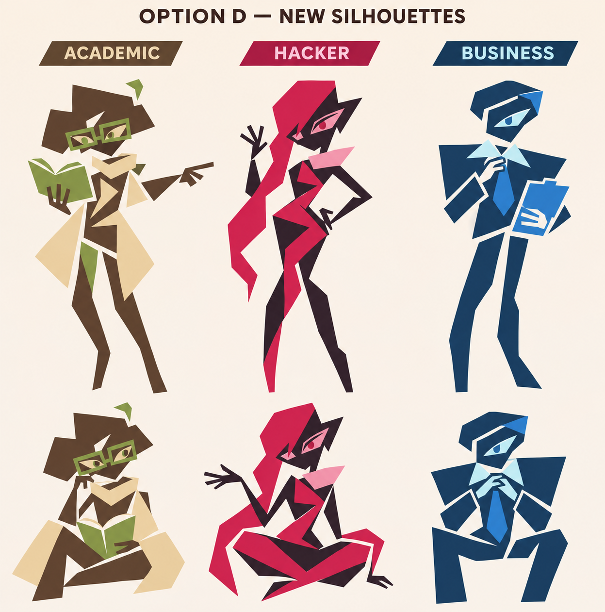
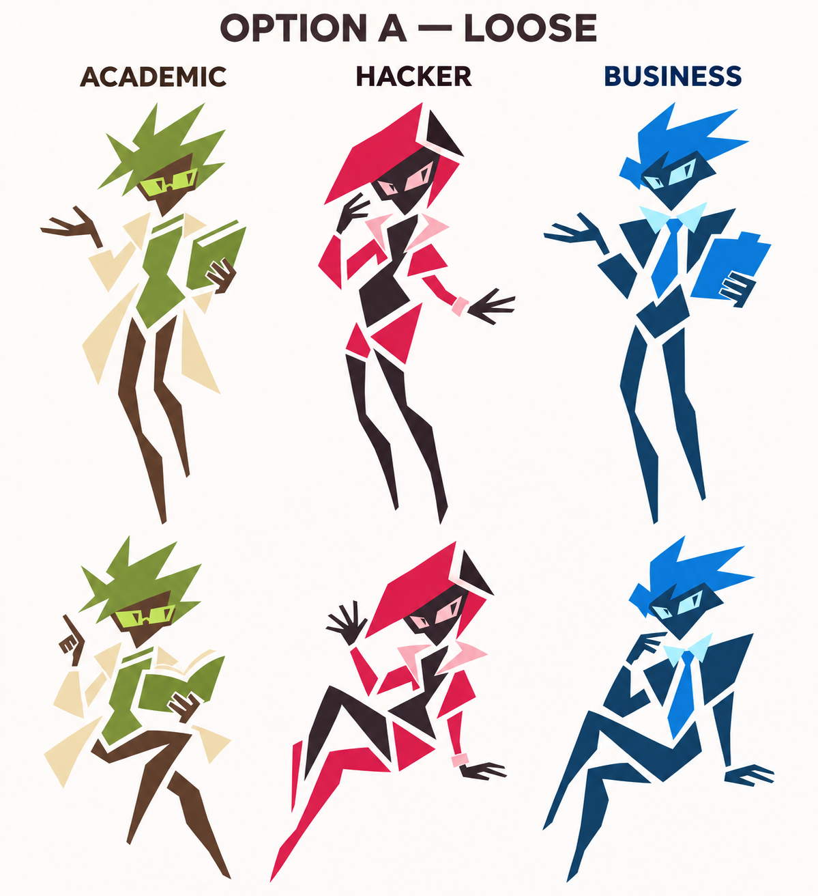
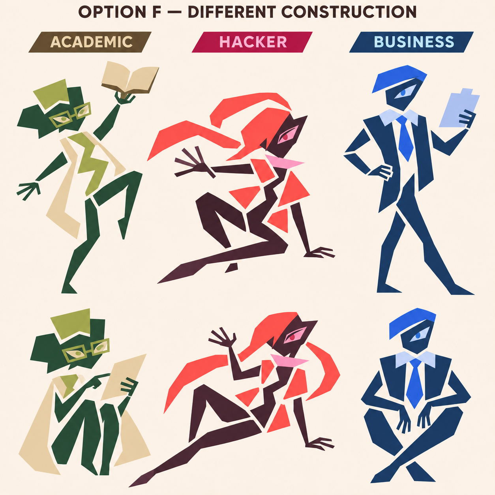
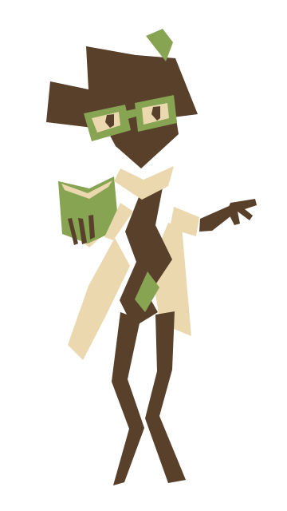
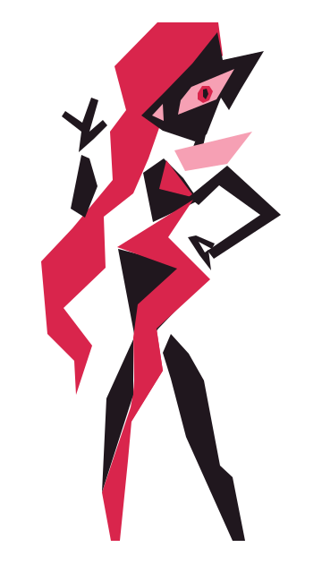
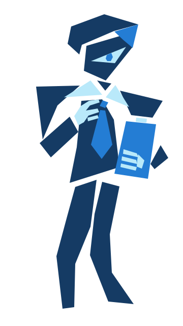

E is the baseline.
E's character identities, outfits, and standing/seated poses are locked as the starting point. Further design and animation work are paused for review. The sheet still needs to be recreated as production SVGs.
E · Different wardrobes

What E establishes
Academic: neutral presentation, loose parchment
coat/cardigan, olive book/glasses, curious gestures.
Hacker:
feminine presentation, short asymmetric crimson bob, cropped
jacket/collar, crossed-arm stance and sideways seat.
Business:
masculine presentation, navy waistcoat, icy sleeve pieces, blue tie,
compact hair and relaxed poses.
Keep loose angular pieces, readable gestures, and independent approximately three-color palettes. Production SVGs, rigging, exact color values, simplified icons, and motif animations remain follow-up work. The app's existing runtime art is unchanged by this selection.
Earlier studies — retained, not selected
D · Previous leader


A · Earlier preference


F · Alternate construction


B · C · Unconfirmed icons · First pose sheet


Earlier D SVG feasibility studies — not E artwork
These use actual separate polygons and demonstrate a code path. E still needs its own SVG conversion; do not substitute the D shapes.





